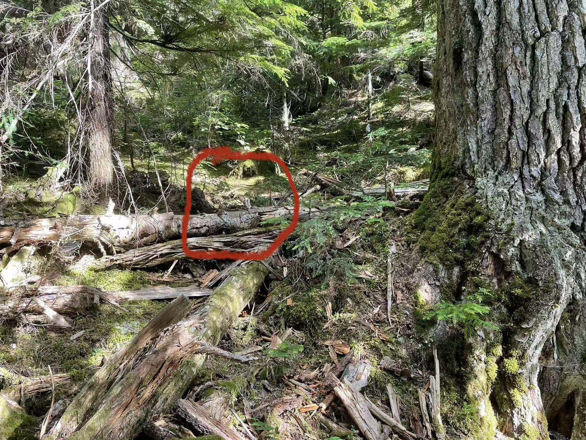

In July 2025, I participated in the fieldwork of nodal array deployment at Mount Rainier, WA. These nodes were used to passively record the ambient noise and earthquake swarms data for one month. Field workers were professors, postdocs, grad and undergrad students from Rice University, University of Washington and University of New Mexico.

During this fieldwork, I took several on-site photos, including wide views of the volcano, the methods used to conceal SmartSolo instruments using tree logs, and the appearance of the deployed locations for future recovery.